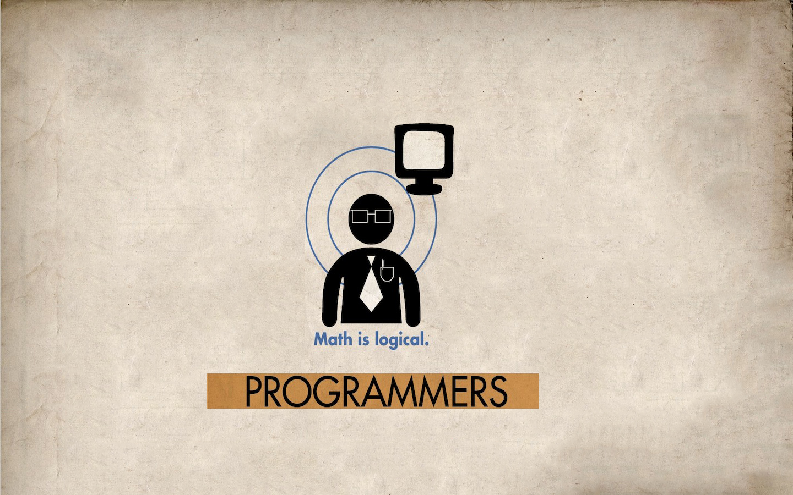
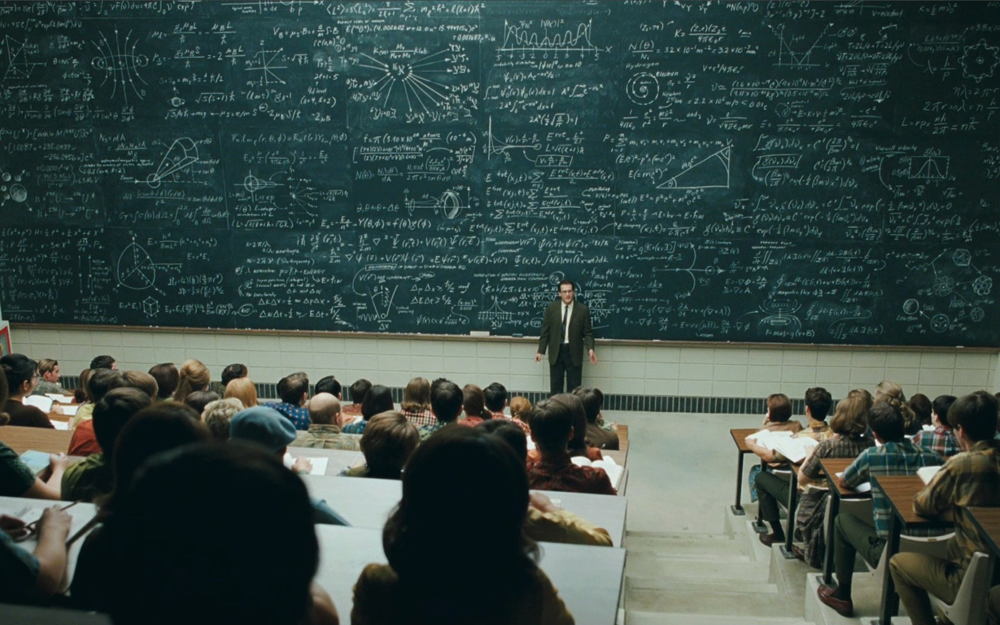
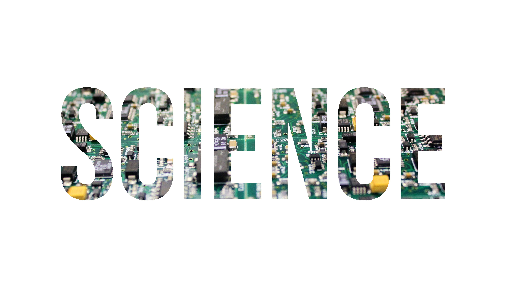
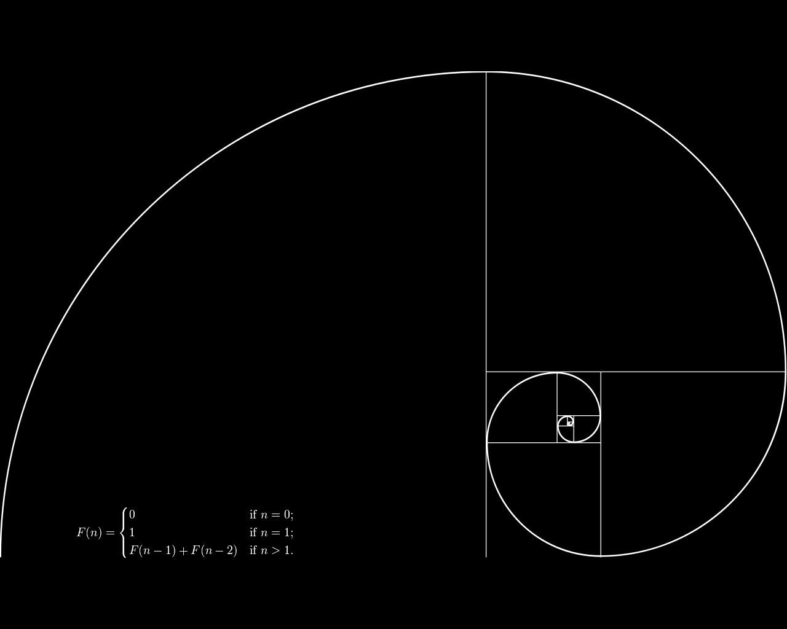

Lideres y Gestores TIC
ACJ-YMCA Medellín
Curso Microsoft
Andrés Felipe Cano Piedrahita
Alejandro Ruiz López
Santiago Torres Patiño
Certificados




Previous
Next
CONCLUSIONES CURSO DE PROGRAMACIÓN
(escrita por: Santiago Torres Patiño, Andres Felipe Cano Piedrahita, Alejandro Ruiz López)
Conclusión general:
La programación se puede pensar como aquella ciencia y arte que trata de analizar la forma de crear comandos para ejecutar acciones, que sean de carácter repetitivo y predecible al interés de las necesidades del usuario. La programación nace para suplir las necesidades de los usuario en sus labores diarias, se deben considerar las distintas formas en que el usuario utilizara la aplicación o sistema de información a programar, los programadores, consideran si se necesitan aplicaciones es conectadas y desconectadas, híbridas, para esta labor los programadores cuentan con una gran variedad de herramientas tales como lo son por ejemplo: html, css, javascript, c#, mvc, java, sql, ruby, python, c, c++, wpf, android, ios, windows phone, windows 8, serviciosrest, json, xml, ajax, ajaj, sql entre otras.
El uso de distintos lenguajes de programación se ha adaptado a cubrir distintas necesidades, como la creación de páginas web, la utilización de comandos para aplicar movimiento, color, estética y poder mantener una jerarquía a la hora de crear animaciones o sistemas de control más complejos.
Para resaltar están los siguientes puestos que vimos en el curso nos brindan muchas herramientas para el momento del desarrollo de aplicaciones o sistemas de información:
El lenguaje HTML: es aquel lenguaje que tiene toda página web, y que su aprendizaje nos ayuda en la creación de páginas web, en su principio
El lenguaje CSS: se puede usar para aplicar mejoras en la estética de una página web, además del orden y otros elementos distintivos.
El lenguaje java script: se puede usar para aplicar mejoras en la interactividad de una página web, además del orden y otros elementos distintivos. Y crear efectos en el lado del cliente y que cuenta con gran variedad de framework como los son angular, jquery.
El lenguaje C#: se puede usar para aplicar web y de escritorio con una sintaxis fácil y además es multi paradigma puesto que acepta paradigma orientado a objetos y a eventos, además se puede trabajar con facilidad en modelado MVC.
Otro aspecto que toco el curso fue el de cliente servidor, bases de datos, haciando de va la creación de aplicaciones.
Conclusión especificas por modulo:
módulo 11:
Resalto este módulo esto que da a conocer el futuro de las programación y gracias a este, ir buscando herramientas que herramientas se están adaptando a este nueva era que esta apenas llegando, también mirar cómo estas nuevas tecnologías interactúan con la música para de esta manera saber cómo adaptarme más fácil esto a mi futura carrera en el ITM.
módulo 7:
Con este módulo me proporciono mucha información útil puesto ya que entendí como se guarda una página web aunque en este curso trabajamos con un servidor local proporcionado por el entorno de desarrollo visual studio 2013.